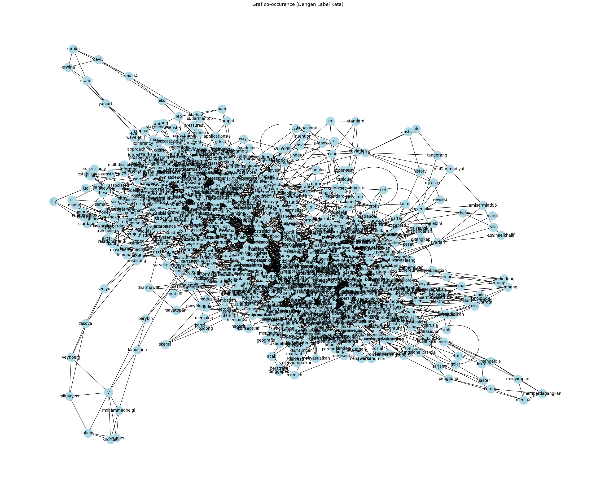

Word Graph PDF#
!pip install --upgrade pymupdf
Requirement already satisfied: pymupdf in /usr/local/lib/python3.12/dist-packages (1.26.7)
%cd /content/drive/MyDrive/PPW
[Errno 2] No such file or directory: '/content/drive/MyDrive/PPW'
/content
import pymupdf
doc = pymupdf.open("Dampak-Investasi-Cryptocurrency.pdf") # open a document
out = open("output.txt", "wb") # create a text output
for page in doc: # iterate the document pages
text = page.get_text().encode("utf8") # get plain text (is in UTF-8)
out.write(text) # write text of page
out.write(bytes((12,))) # write page delimiter (form feed 0x0C)
out.close()
%%capture
!pip install nltk
import nltk
nltk.download('punkt') # hanya perlu sekali
nltk.download('punkt_tab') # opsional, untuk versi terbaru NLTK (≥3.8.2)
[nltk_data] Downloading package punkt to /root/nltk_data...
[nltk_data] Package punkt is already up-to-date!
[nltk_data] Downloading package punkt_tab to /root/nltk_data...
[nltk_data] Package punkt_tab is already up-to-date!
True
with open('output.txt', 'r', encoding='utf-8') as file:
teks = file.read()
print(teks[:200]) # tampilkan 200 karakter pertama
Sanskara Akuntansi dan Keuangan
Vol. 2, No.02, Januari 2024, hal. 90-99
ISSN: 2985-7805, DOI: 10.58812/sak.v2i02
Journal homepage: https://sj.eastasouth-institute.com/index.php/sak
Analisis
# Install: pip install nltk
import nltk
#text = "Ini adalah kalimat pertama. Ini kalimat kedua? Ya!"
sentences = nltk.sent_tokenize(teks)
print(sentences)
# Output: ['Ini adalah kalimat pertama.', 'Ini kalimat kedua?', 'Ya!']
['Sanskara Akuntansi dan Keuangan \nVol.', '2, No.02, Januari 2024, hal.', '90-99 \nISSN: 2985-7805, DOI: 10.58812/sak.v2i02 \n \n \n \nJournal homepage: https://sj.eastasouth-institute.com/index.php/sak \nAnalisis Dampak Investasi Cryptocurrency dan Volatilitas Pasar \nterhadap Profitabilitas Perusahaan Energi di Indonesia \nLoso Judijanto1, Eva Yuniarti Utami2, Erwina Kartika Devi3, Sarmiati4, Eko Sudarmanto5 \n1 IPOSS Jakarta, Indonesia, losojudijantobumn@gmail.com \n2 Universitas Sebelas Maret, eva.yuniarti.utami@staff.uns.ac.id \n3 STIE Syariah Al-Mujaddid, erwinaelkhalifi@gmail.com \n4 STIE Syariah Al-Mujaddid, amisarmiati95@gmail.com \n5 Universitas Muhammadiyah Tangerang, ekosudarmanto.umt@gmail.com \nArticle Info \n \nABSTRAK \nArticle history: \nReceived Jan, 2024 \nRevised Jan, 2024 \nAccepted Jan, 2024 \n \n \nPenelitian ini menyelidiki dampak investasi mata uang kripto dan \nvolatilitas pasar terhadap profitabilitas perusahaan energi di Indonesia \nmelalui analisis kuantitatif.', 'Penelitian ini melibatkan sampel sebanyak \n200 partisipan, termasuk investor mata uang kripto dan eksekutif \nperusahaan energi.', 'Analisis model pengukuran menetapkan validitas \ndan reliabilitas konstruk (Investasi Mata Uang Kripto, Volatilitas Pasar, \ndan Profitabilitas), dan analisis model struktural mengungkapkan \nhubungan yang signifikan antara variabel-variabel ini.', 'Secara \nmengejutkan, hasil penelitian menunjukkan bahwa peningkatan \ninvestasi mata uang kripto dan volatilitas pasar yang lebih tinggi \ndikaitkan dengan peningkatan profitabilitas perusahaan energi.', 'Indeks \nkecocokan model mengkonfirmasi kekokohan model yang diusulkan.', 'Temuan ini memiliki implikasi bagi investor, pembuat kebijakan, dan \npemangku kepentingan industri, yang menekankan perlunya \npengambilan keputusan yang tepat dalam menavigasi lanskap mata \nuang kripto dan industri tradisional yang terus berkembang.', 'ABSTRACT \nThis research investigates the impact of Cryptocurrency investments and \nmarket volatility on the profitability of energy companies in Indonesia through \nquantitative analysis.', 'The study involved a sample of 200 participants, \nincluding Cryptocurrency investors and executives of energy companies.', 'Analysis of measurement models establishes construct validity and reliability \n(Cryptocurrency Investment, Market Volatility, and Profitability), and \nanalysis of structural models reveals significant relationships between these \nvariables.', 'Surprisingly, the results showed that increased Cryptocurrency \ninvestments and higher market volatility were associated with increased \nprofitability of energy companies.', 'The model fit index confirms the robustness \nof the proposed model.', 'The findings have implications for investors, \npolicymakers, and industry stakeholders, who emphasize the need for informed \ndecision-making \nin \nnavigating \nthe \never-evolving \nlandscape \nof \ncryptocurrencies and traditional industries.', 'Kata Kunci: \nCryptocurrency, Ekonomi Digital, \nPengelolaan Risiko, Teknologi \nBlockchain, Volatilitas Pasar \n \nKeywords: \nBlockchain \nTechnology, \nCryptocurrencies, \nDigital \nEconomy, Market Volatility, Risk \nManagement \nThis is an open access article under the CC BY-SA license.', 'Sanskara Akuntansi dan Keuangan (SAK) \n \n \n \n \n \n \uf072 \nVol.', '2, No.02, Januari 2024, hal.', '90-99 \n91 \nCorresponding Author: \nName: Loso Judijanto \nInstitution: IPOSS Jakarta, Indonesia \nEmail: losojudijantobumn@gmail.com \n1.', 'PENDAHULUAN \nMata uang kripto, yang dipimpin oleh Bitcoin, telah muncul sebagai kelas aset yang \nsignifikan dalam lanskap keuangan global.', 'Mereka telah berevolusi dari keingintahuan teknologi \nmenjadi pemain penting di arena investasi.', 'Investigasi komprehensif terhadap mata uang kripto di \nTurki mengungkapkan potensi mereka untuk mempercepat transaksi keuangan, mengurangi biaya, \nmeningkatkan ketertelusuran, dan memudahkan pembayaran internasional (Kahraman, 2023).', 'Layanan keuangan berbasis mata uang kripto telah memperluas fungsionalitasnya, memungkinkan \npengguna untuk membeli, menjual, memperdagangkan, menyimpan, mengelola, dan menerima \npembayaran dalam mata uang kripto (Luchkin et al., 2020).', 'Kemunculan mata uang virtual secara \nmassal berdasarkan teknologi blockchain telah menimbulkan perdebatan mengenai regulasi dan \nrisikonya (Pataki & Zörög, 2023).', 'Sebuah studi yang membandingkan imbal hasil saham FAANG \ndan Bitcoin tidak menemukan perbedaan yang signifikan pada basis yang disesuaikan dengan risiko, \nmenunjukkan bahwa Bitcoin mungkin merupakan investasi pilihan bagi investor yang mencari \nrisiko (Miller & Prondzinski, 2023).', 'Mata uang kripto, khususnya teknologi blockchain, memiliki \npotensi untuk merevolusi kemakmuran ekonomi, menarik minat berbagai negara dan lembaga \nkeuangan (GEHLOT, 2023).', 'Volatilitas yang melekat pada pasar mata uang kripto memiliki implikasi yang luas di luar \npasar keuangan tradisional, yang berdampak pada berbagai sektor termasuk industri energi.', 'Fluktuasi harga mata uang kripto yang cepat dan tidak dapat diprediksi berkontribusi pada \nvolatilitas ini.', 'Studi oleh Donoiu & Iacob (2023) mengonfirmasi adanya imbal hasil yang signifikan \ndan limpahan volatilitas antara mata uang kripto dan pasar komoditas.', 'Mereka menemukan bahwa \nemas dapat berfungsi sebagai tempat berlindung yang aman selama ketidakpastian ekonomi, \nbertindak sebagai lindung nilai terhadap fluktuasi harga gas alam dan minyak mentah.', 'Selain itu, \nBitcoin dan Ethereum berkorelasi positif satu sama lain tetapi berkorelasi negatif dengan emas dan \nminyak mentah, menunjukkan bahwa mata uang kripto ini dapat menjadi alat diversifikasi bagi \ninvestor yang ingin mengurangi eksposur ke aset tradisional (Nam, 2023).', 'Investasi mata uang kripto semakin populer di Indonesia, dengan jumlah investor yang \nmeningkat lebih dari 50% pada tahun 2021 dibandingkan tahun sebelumnya (Restuputri et al., 2023).', 'Minat yang terus meningkat terhadap mata uang kripto ini bersinggungan dengan ketergantungan \nIndonesia pada sektor energi untuk pertumbuhan dan pembangunan yang berkelanjutan.', 'Memahami interaksi antara investasi mata uang kripto dan volatilitas pasar sangat penting bagi \nperusahaan energi di Indonesia (Naeem et al., 2023).', 'Penelitian ini menunjukkan bahwa pasar \nalternatif yang bersih dan mata uang kripto spesifik seperti ETH adalah pemancar risiko bersih ke \npasar lain, yang menyoroti potensi konsekuensi bagi perusahaan energi (Anisa et al., 2023).', 'Selain \nitu, penelitian ini mengungkapkan bahwa integrasi antara mata uang kripto dan kelas aset \ntradisional bervariasi di berbagai skala waktu, dengan hubungan yang lebih kuat yang diamati \ndalam jangka menengah (Siwy et al., 2023).', 'Hal ini menunjukkan bahwa dampak investasi mata \nuang kripto terhadap volatilitas pasar dapat berimplikasi pada perusahaan-perusahaan energi di \nIndonesia, sehingga menekankan perlunya analisis dan pemahaman lebih lanjut mengenai \nhubungan ini (Annamalaisamy & Vepur Jayaraman, 2023).', 'Tujuan utama dari penelitian ini adalah \nuntuk menyelidiki dinamika yang rumit antara tren mata uang kripto, fluktuasi pasar, dan kinerja \nkeuangan perusahaan-perusahaan energi di Indonesia.', 'Sanskara Akuntansi dan Keuangan (SAK) \n \n \n \n \n \n \uf072 \nVol.', '2, No.02, Januari 2024, hal.', '90-99 \n92 \n \nInvestasi \nCryptocurrency \nVolatilitas Pasar \nProfitabilitas \n2.', 'TINJAUAN PUSTAKA \n2.1 Tren Investasi Mata Uang Kripto \nEvolusi investasi mata uang kripto telah dipelajari secara ekstensif dalam literatur.', 'Penelitian awal berfokus pada Bitcoin sebagai perintis mata uang digital terdesentralisasi \nyang berpotensi sebagai lindung nilai terhadap instrumen keuangan tradisional (Hossaion \net al., 2023).', 'Penelitian selanjutnya mengeksplorasi strategi diversifikasi, dampak regulasi, \ndan kemunculan mata uang kripto alternatif (altcoin) (Shaturaev, 2023).', 'Penelitian terbaru \nmenunjukkan penerimaan yang semakin meningkat terhadap mata uang kripto sebagai \nkelas aset yang dapat diinvestasikan, dengan investor institusional memasuki pasar \n(Almeida & Gonçalves, 2023).', 'Memahami tren historis dalam investasi mata uang kripto \nsangat penting untuk menganalisis konteks Indonesia (Kahraman, 2023).', '2.2 Volatilitas Pasar Mata Uang Kripto \nVolatilitas pasar mata uang kripto dipengaruhi oleh berbagai faktor, termasuk \nketidakdewasaan pasar, kendala likuiditas, pengumuman regulasi, perkembangan \nteknologi, indikator makroekonomi, analisis sentimen, penilaian likuiditas pasar, \nperdagangan algoritmik, dan keterkaitan antara pasar mata uang kripto dengan pasar \nkeuangan tradisional.', 'Memahami sifat volatilitas pasar sangat penting untuk menilai \nimplikasinya terhadap profitabilitas perusahaan yang beroperasi di sektor yang terdampak \noleh aset digital, seperti industri energi (Donoiu & Iacob, 2023; Iqbal et al., 2023; Juwita* et \nal., 2023).', '2.3 Profitabilitas Perusahaan Energi \nKinerja keuangan perusahaan energi adalah topik yang menarik dalam literatur \nakademis dan industri.', 'Berbagai metrik digunakan untuk menilai profitabilitas mereka, \ntermasuk laba atas investasi, margin laba, dan efisiensi operasional.', 'Studi-studi \nmempertimbangkan faktor-faktor seperti geopolitik, regulasi, dan kemajuan teknologi \ndalam menganalisis dinamika keuangan sektor ini (Nugrahanti, 2016; Nugrahanti & Jahja, \n2018, 2018; Nugrahanti & Pratiwi, 2023).', 'Penelitian terbaru juga berfokus pada transisi \nmenuju sumber energi berkelanjutan dan terbarukan, dengan memperkenalkan variabel-\nvariabel tambahan yang memengaruhi profitabilitas perusahaan energi.', 'Memahami lanskap \nprofitabilitas perusahaan energi sangat penting untuk mengevaluasi bagaimana faktor \neksternal, seperti investasi mata uang kripto dan volatilitas pasar, dapat memengaruhi \nkelangsungan ekonomi mereka (Joaqui-Barandica & Manotas-Duque, 2023; Makridou et al., \n2023; Shahzad et al., 2023).', 'Gambar 1.', 'Kerangka Konseptual \n3.', 'METODE PENELITIAN \n3.1 Desain Penelitian \nPenelitian kuantitatif ini mengadopsi desain penelitian cross-sectional untuk \nmendapatkan gambaran hubungan antara investasi mata uang kripto, volatilitas pasar, dan \nprofitabilitas perusahaan energi di Indonesia.', 'Sumber data primer dan sekunder akan \ndigunakan untuk memastikan pemahaman yang komprehensif mengenai variabel-variabel \nyang diteliti.', 'Sanskara Akuntansi dan Keuangan (SAK) \n \n \n \n \n \n \uf072 \nVol.', '2, No.02, Januari 2024, hal.', '90-99 \n93 \n3.2 Pengumpulan Data \nTeknik pengambilan sampel acak berstrata akan digunakan untuk memilih sampel \nyang representatif dari 200 peserta dari investor mata uang kripto dan eksekutif perusahaan \nenergi di Indonesia.', 'Survei akan didistribusikan secara elektronik, dengan peserta yang \ndipilih dari strata yang berbeda, seperti kelompok usia yang berbeda, latar belakang \nprofesional, dan tingkat pengalaman dalam investasi mata uang kripto.', 'Survei ini akan \nmencakup pertanyaan-pertanyaan mengenai pola investasi, persepsi risiko, dan kriteria \npengambilan keputusan untuk investor mata uang kripto.', 'Untuk para eksekutif perusahaan \nenergi, survei ini akan berfokus pada dampak tren pasar dan dinamika mata uang kripto \nterhadap strategi keuangan dan kinerja bisnis secara keseluruhan.', '3.3 Pengambilan Sampel \nJumlah sampel sebanyak 200 ditentukan berdasarkan pertimbangan statistik untuk \nmemastikan keandalan dan validitas temuan.', 'Pengambilan sampel terstratifikasi bertujuan \nuntuk mewakili berbagai latar belakang demografi dan profesional, memberikan \npandangan holistik tentang investor mata uang kripto dan eksekutif perusahaan energi di \nIndonesia.', '3.4 Variabel \nTabel 1.', 'Item Indikator \nVariabel \nKode \nItem \nReferensi \nInvestasi \nCryptocurrency (IC) \nIC.1 \n1.', 'Facilitating Condition \n(Perayunda & \nMahyuni, 2022; \nPranata, 2023; Rizki & \nSuryokencono, 2023) \nIC.2 \n2.', 'Risk Tolerance \nIC.3 \n3.', 'Herding Bias \nIC.4 \n4.', 'Overconfidence Bias \nVolatilitas Pasar \n(VP) \nVP.1 \n1.', 'Economic \n(Chun et al., 2020; \nDaniali et al., 2021; Li \net al., 2022; Personal & \nArchive, 2017; Rhouas \net al., 2022) \nVP.2 \n2.', 'Sentiment \nVP.3 \n3.', 'Financial Stress Indices \nVP.4 \n4.', 'Macroeconomic Uncertainty \nVP.5 \n5.', 'Liquidity Ratio \nVP.6 \n6.', 'Technical Indicators \nProfitabilitas (PF) \nPF.1 \n1.', 'Gross Profit Margin \n(Advanced \nTechnology Program, \n2003; Delcroix, 2016; \nRaucci & Tarquinio, \n2015) \nPF.2 \n2.', 'Operating Expenses \nPF.3 \n3.', 'Operating Profit \nPF.4 \n4.', 'Net Profit Margin \nPF.5 \n5.', 'EBITDA \nSumber: Literatur \n3.5 Analisa Data \nStructural Equation Modeling (SEM) dengan Partial Least Squares (PLS) akan \ndigunakan untuk analisis data.', 'SEM-PLS cocok untuk penelitian ini karena memungkinkan \nuntuk menguji hubungan yang kompleks di antara beberapa variabel, mengakomodasi \nmodel pengukuran dan model struktural secara bersamaan (Carrasco, 2010).', 'Metode ini \nsangat efektif untuk ukuran sampel yang lebih kecil dan distribusi data yang tidak normal \n(Perdana et al., 2023).', 'Analisis akan dilakukan dalam dua tahap: Model Pengukuran: \nAnalisis faktor konfirmatori akan dilakukan untuk menilai validitas dan reliabilitas \ninstrumen pengukuran untuk investasi mata uang kripto, volatilitas pasar, dan profitabilitas \nperusahaan energi (Kante & Michel, 2023).', 'Model Struktural: Hubungan antara variabel \nakan diperiksa melalui model struktural, memberikan wawasan tentang efek langsung dan \ntidak langsung dari investasi mata uang kripto dan volatilitas pasar terhadap profitabilitas \nperusahaan energi (Hair & Alamer, 2022).', 'Perangkat lunak statistik seperti SmartPLS akan \ndigunakan untuk analisis SEM-PLS, yang memungkinkan pemeriksaan yang kuat terhadap \nhipotesis yang diajukan (Bollen et al., 2022).', 'Sanskara Akuntansi dan Keuangan (SAK) \n \n \n \n \n \n \uf072 \nVol.', '2, No.02, Januari 2024, hal.', '90-99 \n94 \n4.', 'HASIL DAN PEMBAHASAN \n4.1 Hasil \na. Demografi Sampel \nSurvei ini berhasil mengumpulkan tanggapan dari sampel yang terdiri dari 200 \npartisipan, termasuk investor mata uang kripto dan eksekutif perusahaan energi di \nIndonesia.', 'Analisis demografis memberikan wawasan tentang karakteristik para \npeserta, sehingga meningkatkan pemahaman tentang komposisi sampel.', 'Karakteristik \ndemografis peserta dalam penelitian ini mencerminkan representasi yang seimbang di \nberbagai kelompok usia, dengan peserta berusia antara 18 hingga 25 tahun (12,5%), 26 \nhingga 35 tahun (30%), 36 hingga 45 tahun (25%), 46 hingga 55 tahun (20%), dan 56 tahun \nke atas (12,5%).', 'Sampel ini mencakup investor mata uang kripto (60%) dan eksekutif \nperusahaan energi (40%), memberikan pandangan yang komprehensif tentang \nperspektif dari kedua sisi lanskap keuangan.', 'Para peserta juga memiliki tingkat \npengalaman investasi mata uang kripto yang beragam, dengan beberapa di antaranya \nadalah pemula (15%), investor menengah (40%), investor mahir (25%), dan ahli (20%).', 'Dalam hal latar belakang pendidikan, para peserta memiliki kualifikasi yang beragam, \ntermasuk gelar sarjana (40%), gelar master (35%), gelar doktor (10%), dan sertifikasi \nprofesional (15%).', 'Karakteristik demografis ini memastikan pemahaman yang beragam \ndan komprehensif tentang investasi mata uang kripto dan keterlibatan sektor energi.', 'b. Validitas dan Reliabilitas \nAnalisis model pengukuran menilai validitas dan reliabilitas konstruk, \ntermasuk Investasi Mata Uang Kripto (IC), Volatilitas Pasar (VP), dan Profitabilitas (PF).', "Faktor-faktor pemuatan, Cronbach's alpha, reliabilitas komposit, dan nilai average variance \nextracted (AVE) menunjukkan ketahanan model.", 'Tabel 2.', 'Validitas dan Reliabilitas \nVariabel \nKode \nLoading \nFactor \nCronbach’s \nAlpha \nComposite \nReliability \nAverage Variant \nExtracted \nInvestasi \nCryptocurrency (IC) \nIC.1 \n0.872 \n0.908 \n0.935 \n0.783 \nIC.2 \n0.920 \nIC.3 \n0.896 \nIC.4 \n0.851 \nVolatilitas Pasar (VP) \nVP.1 \n0.860 \n0.907 \n0.928 \n0.682 \nVP.2 \n0.838 \nVP.3 \n0.792 \nVP.4 \n0.859 \nVP.5 \n0.794 \nVP.6 \n0.809 \nProfitabilitas (PF) \n \nPF.1 \n0.792 \n0.857 \n0.897 \n0.636 \nPF.2 \n0.758 \nPF.3 \n0.767 \nPF.4 \n0.801 \nPF.5 \n0.864 \nSumber: Hasil pengolahan data oleh peneliti (2024) \nHasil model pengukuran menunjukkan bahwa konstruk, termasuk Investasi \nMata Uang Kripto, Volatilitas Pasar, dan Profitabilitas, menunjukkan tingkat keandalan \ndan validitas yang tinggi.', 'Faktor-faktor pemuatan untuk setiap indikator jauh di atas \nambang batas yang direkomendasikan yaitu 0,7, yang menunjukkan hubungan yang \nkuat antara indikator yang diamati dan konstruk laten masing-masing.', 'Nilai alpha \nCronbach untuk semua konstruk melebihi 0,8, menandakan konsistensi internal yang \nsangat baik dalam setiap konstruk.', 'Nilai reliabilitas komposit memvalidasi lebih lanjut \n\x0cSanskara Akuntansi dan Keuangan (SAK) \n \n \n \n \n \n \uf072 \nVol.', '2, No.02, Januari 2024, hal.', '90-99 \n95 \nreliabilitas konstruk, melampaui ambang batas yang direkomendasikan yaitu 0,7.', 'Nilai \nAVE, meskipun sedikit bervariasi, secara umum memenuhi kriteria yang dapat diterima \nyaitu 0,5, yang mengindikasikan bahwa sebagian besar varians dalam konstruk \nditangkap oleh indikator masing-masing.', 'Tabel 3.', 'Validitas Diskriminan \nVariabel \nInvestasi Cryptocurrency \nProfitabilitas \nVolatilitas Pasar \nInvestasi Cryptocurrency \n0.815 \n \n \nProfitabilitas \n0.814 \n0.797 \n \nVolatilitas Pasar \n0.713 \n0.836 \n0.826 \nSumber: Data pengolahan penelitian oleh peneliti (2024) \nMatriks HMTH mengungkapkan bahwa korelasi kuadrat antara setiap \npasangan konstruk kurang dari nilai AVE untuk masing-masing konstruk, yang \nmengindikasikan validitas diskriminan.', 'Korelasi kuadrat antara Investasi Mata Uang \nKripto dan Profitabilitas (0,815) kurang dari nilai AVE untuk kedua konstruk (0,783 dan \n0,636, masing-masing), yang mengonfirmasi validitas diskriminan di antara konstruk-\nkonstruk ini.', 'Demikian pula, korelasi kuadrat antara Investasi Mata Uang Kripto dan \nVolatilitas Pasar (0,713) kurang dari nilai AVE untuk kedua konstruk (0,783 dan 0,682, \nmasing-masing), yang mengkonfirmasi validitas diskriminan antara konstruk-konstruk \nini.', 'Selain itu, korelasi kuadrat antara Profitabilitas dan Volatilitas Pasar (0,836) kurang \ndari nilai AVE untuk kedua konstruk (0,636 dan 0,682), yang mengkonfirmasi validitas \ndiskriminan antara konstruk-konstruk ini.', 'Tabel 4.', 'Inner VIF Model \nVariable \nVIF Values \nInvestasi Cryptocurrency → Profitabilitas \n2.033 \nVolatilitas Pasar → Profitabilitas \n2.033 \nSumber: Hasil pengolahan data peneliti (2024) \nNilai VIF untuk kedua hubungan tersebut adalah sekitar 2,033, yang berada di \nbawah ambang batas yang diterima secara umum yaitu 3.000.', 'Nilai VIF di sekitar 2 \nmenunjukkan tingkat multikolinieritas yang rendah, menunjukkan bahwa tidak ada \nkorelasi yang signifikan antara variabel prediktor (Investasi Cryptocurrency dan \nVolatilitas Pasar) dalam memprediksi variabel dependen (Profitabilitas).', 'Gambar 1.', 'Model Penilaian Internal \nSumber: Data yang diolah oleh peneliti, 2024 \n\x0cSanskara Akuntansi dan Keuangan (SAK) \n \n \n \n \n \n \uf072 \nVol.', '2, No.02, Januari 2024, hal.', '90-99 \n96 \nc. \nKecocokan Model \nIndeks kecocokan model digunakan untuk menilai seberapa baik model \nstruktural yang diusulkan sesuai dengan data yang diamati.', 'Kombinasi dari ukuran-\nukuran goodness-of-fit memberikan wawasan tentang kecukupan model.', 'Nilai \nStandardized Root Mean Square Residual (SRMR) sebesar 0,075 menunjukkan kecocokan \nyang baik, karena berada di bawah ambang batas yang diterima secara umum yaitu 0,08.', 'Nilai Normed Fit Index (NFI) sebesar 0,90 menunjukkan kecocokan yang memuaskan, \ndengan nilai di atas 0,90 secara umum dianggap dapat diterima.', 'Namun, NFI harus \nditafsirkan bersama dengan indeks kecocokan lainnya.', 'Variance Explained (R²) untuk \nProfitabilitas adalah 88%, yang menunjukkan bahwa model menjelaskan sebagian besar \nvarians dalam Profitabilitas.', 'Hal ini menunjukkan bahwa variabel-variabel prediktor \nmemberikan kontribusi yang signifikan dalam menjelaskan variasi yang diamati dalam \nvariabel dependen.', 'd. Analisis Jalur \nAnalisis model struktural memberikan wawasan tentang hubungan antara \nvariabel prediktor (Investasi Mata Uang Kripto dan Volatilitas Pasar) dan variabel \ndependen (Profitabilitas).', 'Tabel 5.', 'Hasil Hipotesis \n \nOriginal \nSample (O) \nSample \nMean (M) \nStandard \nDeviation \n(STDEV) \nT Statistics \n(|O/STDEV|) \nP \nValues \nInvestasi \nCryptocurrency -> \nProfitabilitas \n0.607 \n0.604 \n0.051 \n11.938 \n0.000 \nVolatilitas Pasar -> \nProfitabilitas \n0.403 \n0.407 \n0.055 \n7.328 \n0.000 \n \nSumber: Pengolahan data oleh peneliti (2024) \nKoefisien positif sebesar 0,607 untuk hubungan antara Investasi Mata Uang \nKripto dan Profitabilitas menunjukkan dampak positif yang signifikan.', 'Statistik T \nsebesar 11,938, dengan nilai p-value sebesar 0,000, menunjukkan bahwa hubungan \ntersebut signifikan secara statistik.', 'Demikian pula, koefisien positif sebesar 0,403 untuk \nhubungan antara Volatilitas Pasar dan Profitabilitas menunjukkan dampak positif yang \nsignifikan.', 'Statistik T sebesar 7,328, dengan nilai p-value sebesar 0,000, menunjukkan \nbahwa hubungan tersebut signifikan secara statistik.', '4.2 Pembahasan \na. Investasi Mata Uang Kripto dan Profitabilitas \nPeningkatan investasi dalam mata uang kripto di Indonesia dikaitkan dengan \nprofitabilitas yang lebih tinggi untuk perusahaan energi.', 'Jumlah investor mata uang \nkripto di Indonesia terus meningkat, melampaui jumlah investor saham.', 'Imbal hasil dan \nrisiko mata uang kripto ditemukan berbeda secara signifikan dengan saham Syariah, \ndengan risiko mata uang kripto yang lebih tinggi.', 'Niat perilaku untuk berinvestasi \ndalam mata uang kripto dipengaruhi oleh efek sosial, dukungan regulasi, dan faktor \nkepercayaan.', 'Literasi keuangan memainkan peran penting dalam mempengaruhi \nkeputusan investasi, dengan risiko yang dirasakan dan perilaku menggiring yang \nmemediasi hubungan antara literasi keuangan dan keputusan investasi.', 'Meningkatkan \nliterasi keuangan penting bagi investor, terutama mahasiswa, sebelum berinvestasi \ndalam mata uang kripto.', 'Selain itu, investor harus menyadari dampak potensial dari \nperilaku herding dan risiko yang dirasakan pada keputusan investasi mereka (Ahmadi, \n2023; Handayani et al., 2023; Rahyuda & Candradewi, 2023; Restuputri et al., 2023; et \n\x0cSanskara Akuntansi dan Keuangan (SAK) \n \n \n \n \n \n \uf072 \nVol.', '2, No.02, Januari 2024, hal.', '90-99 \n97 \nal., 2023).', 'Temuan ini menyoroti potensi dampak positif dari penggunaan aset digital \nterhadap kinerja keuangan.', 'b. Volatilitas Pasar dan Profitabilitas \nBerlawanan dengan ekspektasi, hubungan positif antara Volatilitas Pasar dan \nProfitabilitas menunjukkan bahwa volatilitas pasar yang lebih tinggi bertepatan dengan \npeningkatan profitabilitas perusahaan energi.', 'Hasil yang tidak terduga ini mendorong \neksplorasi lebih lanjut tentang bagaimana perusahaan-perusahaan energi menavigasi \ndan memanfaatkan kondisi pasar yang dinamis.', '4.3 Implikasi dan Rekomendasi \nTemuan ini menunjukkan peluang bagi investor dan pemangku kepentingan untuk \nmemanfaatkan investasi mata uang kripto untuk meningkatkan profitabilitas.', 'Para pembuat \nkebijakan harus mempertimbangkan kerangka kerja regulasi untuk memastikan integrasi \naset digital yang bertanggung jawab di sektor energi.', 'Para pemangku kepentingan industri \ndapat mengambil manfaat dari strategi yang memanfaatkan volatilitas pasar untuk hasil \nkeuangan yang lebih baik.', '4.4 Keterbatasan dan Penelitian di Masa Depan \nDengan menyadari adanya keterbatasan, seperti sifat cross-sectional dari penelitian \nini dan fokus pada konteks Indonesia, penelitian di masa depan dapat mengeksplorasi \nanalisis longitudinal dan memperluas penelitian ini ke wilayah geografis lainnya.', 'Selain itu, \nmengeksplorasi sub-sektor industri tertentu di dalam industri energi dapat memberikan \nwawasan yang lebih beragam.', '5.', 'KESIMPULAN \nKesimpulannya, penelitian ini menyoroti hubungan yang rumit antara investasi mata uang \nkripto, volatilitas pasar, dan profitabilitas perusahaan energi di Indonesia.', 'Penelitian ini, yang \ndidasarkan pada metodologi yang solid, menetapkan keandalan dan validitas model pengukuran \ndan mengungkap hubungan positif yang tak terduga antara investasi mata uang kripto, volatilitas \npasar, dan profitabilitas.', 'Temuan ini menantang kebijaksanaan konvensional dan menawarkan \nwawasan unik ke dalam dinamika sektor energi Indonesia.', 'Hasil penelitian ini membawa implikasi \nbagi para investor yang mencari peluang di dunia mata uang kripto dan perusahaan-perusahaan \nenergi yang ingin mengoptimalkan kinerja keuangan.', 'Seiring dengan semakin matangnya pasar \nmata uang kripto, para pemangku kepentingan harus menyesuaikan strategi untuk memanfaatkan \npotensi keuntungan yang disoroti dalam penelitian ini.', 'Penelitian ini berkontribusi pada wacana \nyang sedang berlangsung tentang perpaduan antara aset digital dan industri tradisional, membuka \njalan untuk eksplorasi dan penelitian lebih lanjut di bidang yang berkembang pesat ini.', 'DAFTAR PUSTAKA \nAdvanced Technology Program.', '(2003).', 'Technolog y Adoption Indicators Applied to the ATP Flow-Control Machining \nProject.', 'NISTIR 6888.', 'Ahmadi, H. (2023).', 'Is Cryptocurrency Risky as An Investment Instrument?', 'Analysis of Return and Risk with A \nComparison \nof \nSharia \nStocks.', 'International \nJournal \nof \nIslamic \nBusiness \nEthics, \n8(1), \n40. \nhttps://doi.org/10.30659/ijibe.8.1.40-53 \nAlmeida, J., & Gonçalves, T. C. (2023).', 'A Decade of Cryptocurrency Investment Literature: A Cluster-Based \nSystematic \nAnalysis.', 'In \nInternational \nJournal \nof \nFinancial \nStudies \n(Vol.', '11, \nIssue \n2).', 'https://doi.org/10.3390/ijfs11020071 \nAnisa, D., Anggraini, T., & Tambunan, K. (2023).', 'Analisis Cryptocurrency Sebagai Alat Alternatif Berinvestasi \nDi Indonesia.', 'Owner, 7(3), 2674–2682.', 'https://doi.org/10.33395/owner.v7i3.1698 \nAnnamalaisamy, B., & Vepur Jayaraman, S. (2023).', 'Do cryptocurrencies integrate with the indices of equity, \nsustainability, clean energy, and crude oil?', 'A wavelet coherency approach.', 'International Journal of Finance \n\x0cSanskara Akuntansi dan Keuangan (SAK) \n \n \n \n \n \n \uf072 \nVol.', '2, No.02, Januari 2024, hal.', '90-99 \n98 \n& Economics, n/a(n/a).', 'https://doi.org/https://doi.org/10.1002/ijfe.2843 \nBollen, K. A., Fisher, Z. F., Giordano, M. L., Lilly, A. G., Luo, L., & Ye, A.', '(2022).', 'An introduction to model \nimplied instrumental variables using two stage least squares (MIIV-2SLS) in structural equation models \n(SEMs).', 'Psychological Methods, 27(5), 752.', 'Carrasco, J. L. (2010).', 'Structural Equation Model.', 'Encyclopedia of Biopharmaceutical Statistics, 8(3), 1300–1305.', 'https://doi.org/10.3109/9781439822463.209 \nChun, D., Cho, H., & Ryu, D. (2020).', 'Economic indicators and stock market volatility in an emerging economy.', 'Economic Systems, 44(2), 100788. https://doi.org/https://doi.org/10.1016/j.ecosys.2020.100788 \nDaniali, S. M., Barykin, S. E., Kapustina, I. V, Mohammadbeigi Khortabi, F., Sergeev, S. M., Kalinina, O. V, \nMikhaylov, A., Veynberg, R., Zasova, L., & Senjyu, T. (2021).', 'Predicting Volatility Index According to \nTechnical Index and Economic Indicators on the Basis of Deep Learning Algorithm.', 'In Sustainability (Vol.', '13, Issue 24).', 'https://doi.org/10.3390/su132414011 \nDelcroix, F. (2016).', 'How to monitor the front end of innovation in the new product development: defining performance \nindicators.', 'Denura, S. C., & Soekarno, S. (2023).', 'A Study on Behavioural Bias & Investment Decision from Perspective of \nIndonesia’s Cryptocurrency Investors.', 'International Journal of Current Science Research and Review, 06(01), \n535–548.', 'https://doi.org/10.47191/ijcsrr/v6-i1-58 \nDonoiu, P. C., & Iacob, D. (2023).', 'The Cryptocurrency Market and the Financial Stability.', 'Proceedings of the \nInternational Conference on Business Excellence, 17(1), 1769–1778.', 'https://doi.org/10.2478/picbe-2023-0157 \nGEHLOT, P. (2023).', 'Cryptocurrency And Technology: Could It Revolutionize The Economic Prosperity?', 'Russian Law Journal, 11. https://doi.org/10.52783/rlj.v11i2s.571 \nHair, J., & Alamer, A.', '(2022).', 'Partial Least Squares Structural Equation Modeling (PLS-SEM) in second language \nand education research: Guidelines using an applied example.', 'Research Methods in Applied Linguistics, 1(3), \n100027.', 'Handayani, D., Ikhsan, R. B., & Prabowo, H. (2023).', 'Behavioral Intention to Invest Cryptocurrency in Indonesia: \nAn Empirical Study.', '2023 8th International Conference on Business and Industrial Research (ICBIR), 84–89.', 'https://doi.org/10.1109/ICBIR57571.2023.10147507 \nHossaion, S., Bairagi, M., Aktar, J., Honey, U., & Mithy, S. A.', '(2023).', 'The Evolution of Bitcoin: A Historical \nAnalysis \nand \nFuture \nProspects.', 'IRASD \nJournal \nof \nEconomics, \n5(2 \nSE-Articles), \n241–252.', 'https://doi.org/10.52131/joe.2023.0502.0124 \nIqbal, F., Zahid, M., & Koutmos, D. (2023).', 'Cryptocurrency Trading and Downside Risk.', 'In Risks (Vol.', '11, Issue \n7).', 'https://doi.org/10.3390/risks11070122 \nJoaqui-Barandica, O., & Manotas-Duque, D. (2023).', 'How do Climate and Macroeconomic Factors Affect the \nProfitability of the Energy Sector?', 'International Journal of Energy Economics and Policy, 13, 444–454.', 'https://doi.org/10.32479/ijeep.14303 \nJuwita*, R., Ramadhani, D. M., & Maris, A. W. I.', '(2023).', 'The Determinants of Cryptocurrency Returns.', 'Jurnal \nIlmu Keuangan Dan Perbankan (JIKA), 12(2), 235–246.', 'https://doi.org/10.34010/jika.v12i2.9461 \nKahraman, Y.', '(2023).', 'Finance of the Digital Age: Cryptocurrencies.', 'https://doi.org/10.58830/ozgur.pub105.c644 \nKante, M., & Michel, B.', '(2023).', 'Use of partial least squares structural equation modelling (PLS-SEM) in privacy \nand disclosure research on social network sites: A systematic review.', 'Comput.', 'Hum.', 'Behav.', 'Rep, 10, 100291.', 'Li, X., Liang, C., & Ma, F. (2022).', 'Forecasting stock market volatility with a large number of predictors: New \nevidence \nfrom \nthe \nMS-MIDAS-LASSO \nmodel.', 'Annals \nof \nOperations \nResearch.', 'https://doi.org/10.1007/s10479-022-04716-1 \nLuchkin, A. G., Lukasheva, O. L., Novikova, N. E., Melnikov, V. A., Zyatkova, A. V., & Yarotskaya, E. V. (2020).', 'Cryptocurrencies in the Global Financial System: Problems and Ways to Overcome them.', '148(RuDEcK), 423–430.', 'https://doi.org/10.2991/aebmr.k.200730.077 \nMakridou, G., Doumpos, M., & Lemonakis, C. (2023).', 'Relationship between ESG and corporate financial \nperformance in the energy sector: empirical evidence from European companies.', 'International Journal of \nEnergy Sector Management, ahead-of-print(ahead-of-print).', 'https://doi.org/10.1108/IJESM-01-2023-0012 \nMiller, M., & Prondzinski, D. (2023).', 'Cryptocurrency Digital Assets: Evidence of the Emergence of \nCryptocurrency Securities Markets as an Investment Asset Class, 2018-2023.', 'Journal of Accounting and \nFinance, 23(2 SE-Articles).', 'https://doi.org/10.33423/jaf.v23i2.6090 \nNaeem, M. A., Gul, R., Farid, S., Karim, S., & Lucey, B. M. (2023).', 'Assessing linkages between alternative energy \nmarkets and cryptocurrencies.', 'Journal of Economic Behavior & Organization, 211, 513–529.', 'https://doi.org/https://doi.org/10.1016/j.jebo.2023.04.035 \nNam, N. H. (2023).', 'Impact of cryptocurrencies on financial markets.', 'Journal of Social Sciences and Humanities, 65, \n\x0cSanskara Akuntansi dan Keuangan (SAK) \n \n \n \n \n \n \uf072 \nVol.', '2, No.02, Januari 2024, hal.', '90-99 \n99 \n3–15.', 'https://doi.org/10.31276/VMOSTJOSSH.65(2).03-15 \nNugrahanti, T. P. (2016).', 'Risk assessment and earning management in banking of Indonesia: corporate \ngovernance mechanisms.', 'Global Journal of Business and Social Science Review, 4(1), 1–9.', 'Nugrahanti, T. P., & Jahja, A. S. (2018).', 'Audit judgment performance: The effect of performance incentives, \nobedience pressures and ethical perceptions.', 'Journal of Environmental Accounting and Management, 6(3), \n225–234.', 'Nugrahanti, T. P., & Pratiwi, A. S. (2023).', 'The Remote Audit and Information Technology: The impact of Covid-\n19 Pandemics.', 'JABE (Journal Of Accounting And Business Education), 8(1), 15–39.', 'Pataki, P., & Zörög, Z.', '(2023).', 'Cryptocurrency Operating Principle, Market and Risks.', 'Acta Carolus Robertus, 13, \n62–75.', 'https://doi.org/10.33032/acr.3988 \nPerayunda, I. G. A. D., & Mahyuni, L. P. (2022).', 'Faktor-Faktor Yang Mempengaruhi Keputusan Investasi \nCryptocurrency Pada Kaum Milenial.', 'EKUITAS (Jurnal Ekonomi Dan Keuangan), 6(3), 351–372.', 'https://doi.org/10.24034/j25485024.y2022.v6.i3.5224 \nPerdana, P. N., Armeliza, D., Khairunnisa, H., & Nasution, H. (2023).', 'Research Data Processing Through \nStructural Equation Model-Partial Least Square (SEM-PLS) Method.', 'Jurnal Pemberdayaan Masyarakat \nMadani (JPMM), 7(1), 44–50.', 'Personal, M., & Archive, R. (2017).', 'Munich Personal RePEc Archive Sentiment indicators and macroeconomic data as \ndrivers for low-frequency stock market volatility Sentiment indicators and macroeconomic data as drivers for.', '80266.', 'Pranata, R. M. (2023).', 'Keputusan Investasi Cryptocurrency di Purwakarta: Mengungkap Dampak dari Herding \ndan \nOverconfidence.', 'Jurnal \nManajemen \n& \nBisnis \nKreatif, \n9(1), \n62–72.', 'https://doi.org/10.36805/manajemen.v9i1.5502 \nRahyuda, H., & Candradewi, M. (2023).', 'Determinants of cryptocurrency investment decisions (Study of \nstudents \nin \nBali).', 'Investment \nManagement \nand \nFinancial \nInnovations, \n20, \n193–204.', 'https://doi.org/10.21511/imfi.20(2).2023.17 \nRaucci, D., & Tarquinio, L. (2015).', 'A Study of the Economic and Non-Financial Performance Indicators in \nCorporate \nSustainability \nReports.', 'Journal \nof \nSustainable \nDevelopment, \n8. \nhttps://doi.org/10.5539/jsd.v8n6p216 \nRestuputri, D. P., Refoera, F. B., & Masudin, I.', '(2023).', 'Investigating Acceptance of Digital Asset and Crypto \nInvestment Applications Based on the Use of Technology Model (UTAUT2).', 'In FinTech (Vol.', '2, Issue 3, \npp.', '388–413).', 'https://doi.org/10.3390/fintech2030022 \nRhouas, S., Bouchekourte, M., & El hami, N. (2022).', 'Optimization of the impact measurement of market \nstructure on liquidity and volatility.', 'International Journal for Simulation and Multidisciplinary Design \nOptimization, 13, 9. https://doi.org/10.1051/smdo/2021040 \nRizki, F., & Suryokencono, P. (2023).', 'Pertanggungjawaban Penyelenggara Investasi Bodong yang Memakai \nSkema Ponzi dengan Modus Investasi Cryptocurrency.', 'Indonesian Journal of Law and Justice, 1, 10. \nhttps://doi.org/10.47134/ijlj.v1i2.2013 \nShahzad, S. J. H., Ferrer, R., & Bouri, E. (2023).', 'Systemic Risk in the Global Energy Sector: Structure, \nDeterminants \nand \nPortfolio \nManagement \nImplications.', 'Energy \nJournal, \n44(6), \n211–242.', 'https://doi.org/10.5547/01956574.44.6.ssha \nShaturaev, J.', '(2023).', 'Impact of Cryptocurrency Market on the Performance of Stock Market An Empirical Study.', 'Munich Personal RePEc Archive, 118244.', 'Siwy, F. I. D., Dharmawan, M. S., & Mayatopani, H. (2023).', 'Penggunaan Metode AHP dalam Menentukan \nCryptocurrency untuk Investasi.', 'JTIM\u202f: Jurnal Teknologi Informasi Dan Multimedia, 5(2 SE-Articles).', 'https://doi.org/10.35746/jtim.v5i2.321']
import pandas as pd
df = pd.DataFrame(sentences, columns=['kalimat'])
print(df)
kalimat
0 Sanskara Akuntansi dan Keuangan \nVol.
1 2, No.02, Januari 2024, hal.
2 90-99 \nISSN: 2985-7805, DOI: 10.58812/sak.v2i...
3 Penelitian ini melibatkan sampel sebanyak \n20...
4 Analisis model pengukuran menetapkan validitas...
.. ...
295 Munich Personal RePEc Archive, 118244.
296 Siwy, F. I. D., Dharmawan, M. S., & Mayatopani...
297 Penggunaan Metode AHP dalam Menentukan \nCrypt...
298 JTIM : Jurnal Teknologi Informasi Dan Multimed...
299 https://doi.org/10.35746/jtim.v5i2.321
[300 rows x 1 columns]
df.to_csv('kalimat.csv', index=False, encoding='utf-8')
Untuk membuat word graph
Lanjutkan dengan menggunakan https://www.geeksforgeeks.org/nlp/co-occurence-matrix-in-nlp/
import nltk
from nltk.corpus import stopwords
from nltk.tokenize import word_tokenize
from collections import defaultdict, Counter
import numpy as np
import pandas as pd
# Download NLTK resources
nltk.download('punkt')
nltk.download('stopwords')
# ==== BACA FILE CSV ====
df = pd.read_csv("kalimat.csv")
# Ambil semua teks dalam satu string
text = " ".join(df.iloc[:,0].astype(str))
# Preprocess the text
# Menggunakan stopwords bahasa Indonesia
stop_words = set(stopwords.words('indonesian'))
words = word_tokenize(text.lower())
words = [word for word in words if word.isalnum() and not word.isdigit() and word not in stop_words]
# Define the window size for co-occurrence
window_size = 2
# Create a list of co-occurring word pairs
co_occurrences = defaultdict(Counter)
for i, word in enumerate(words):
for j in range(max(0, i - window_size), min(len(words), i + window_size + 1)):
if i != j:
co_occurrences[word][words[j]] += 1
# Create a list of unique words
unique_words = list(set(words))
# Initialize the co-occurrence matrix
co_matrix = np.zeros((len(unique_words), len(unique_words)), dtype=int)
# Populate the matrix
word_index = {word: idx for idx, word in enumerate(unique_words)}
for word, neighbors in co_occurrences.items():
for neighbor, count in neighbors.items():
co_matrix[word_index[word]][word_index[neighbor]] = count
# DataFrame output
co_matrix_df = pd.DataFrame(co_matrix, index=unique_words, columns=unique_words)
co_matrix_df
[nltk_data] Downloading package punkt to /root/nltk_data...
[nltk_data] Package punkt is already up-to-date!
[nltk_data] Downloading package stopwords to /root/nltk_data...
[nltk_data] Package stopwords is already up-to-date!
| melibatkan | pemancar | sisi | rahyuda | industrial | i | in | law | manajemen | sharia | ... | memperluas | menengah | loso | regulasi | berbeda | fokus | pemain | hair | securities | nam | |
|---|---|---|---|---|---|---|---|---|---|---|---|---|---|---|---|---|---|---|---|---|---|
| melibatkan | 0 | 0 | 0 | 0 | 0 | 0 | 0 | 0 | 0 | 0 | ... | 0 | 0 | 0 | 0 | 0 | 0 | 0 | 0 | 0 | 0 |
| pemancar | 0 | 0 | 0 | 0 | 0 | 0 | 0 | 0 | 0 | 0 | ... | 0 | 0 | 0 | 0 | 0 | 0 | 0 | 0 | 0 | 0 |
| sisi | 0 | 0 | 0 | 0 | 0 | 0 | 0 | 0 | 0 | 0 | ... | 0 | 0 | 0 | 0 | 0 | 0 | 0 | 0 | 0 | 0 |
| rahyuda | 0 | 0 | 0 | 0 | 0 | 0 | 0 | 0 | 0 | 0 | ... | 0 | 0 | 0 | 0 | 0 | 0 | 0 | 0 | 0 | 0 |
| industrial | 0 | 0 | 0 | 0 | 0 | 0 | 0 | 0 | 0 | 0 | ... | 0 | 0 | 0 | 0 | 0 | 0 | 0 | 0 | 0 | 0 |
| ... | ... | ... | ... | ... | ... | ... | ... | ... | ... | ... | ... | ... | ... | ... | ... | ... | ... | ... | ... | ... | ... |
| fokus | 0 | 0 | 0 | 0 | 0 | 0 | 0 | 0 | 0 | 0 | ... | 0 | 0 | 0 | 0 | 0 | 0 | 0 | 0 | 0 | 0 |
| pemain | 0 | 0 | 0 | 0 | 0 | 0 | 0 | 0 | 0 | 0 | ... | 0 | 0 | 0 | 0 | 0 | 0 | 0 | 0 | 0 | 0 |
| hair | 0 | 0 | 0 | 0 | 0 | 0 | 0 | 0 | 0 | 0 | ... | 0 | 0 | 0 | 0 | 0 | 0 | 0 | 0 | 0 | 0 |
| securities | 0 | 0 | 0 | 0 | 0 | 0 | 0 | 0 | 0 | 0 | ... | 0 | 0 | 0 | 0 | 0 | 0 | 0 | 0 | 0 | 0 |
| nam | 0 | 0 | 0 | 0 | 0 | 0 | 0 | 0 | 0 | 0 | ... | 0 | 0 | 0 | 0 | 0 | 0 | 0 | 0 | 0 | 0 |
992 rows × 992 columns
import networkx as nx
arr = co_matrix_df.to_numpy()
G=nx.from_numpy_array(arr)
%%capture
!pip install networkx
import matplotlib.pyplot as plt
import networkx as nx
# Create a dictionary to map node indices back to words
labels = {i: word for i, word in enumerate(unique_words)}
plt.figure(figsize=(25, 20))
nx.draw(G, labels=labels, with_labels=True, node_color='lightblue', node_size=700, font_size=12)
plt.title("Graf co-occurence (Dengan Label Kata)", fontsize=14)
plt.show()

print(f"Jumlah kata (nodes) dalam graf: {G.number_of_nodes()}")
Jumlah kata (nodes) dalam graf: 992